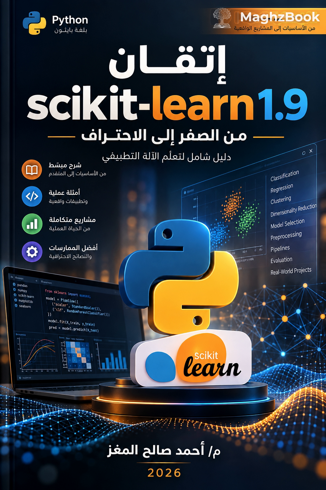

إتقان scikit-learn 1.9
من الصفر إلى الاحتراف — دليل شامل لتعلّم الآلة التطبيقي
104 فصلاً في 12 جزءاً على بيئة حقيقية scikit-learn 1.9.1 وPython 3.14: تجهيز البيانات وهندسة الخصائص، النماذج الخطية والمجموعات والتجميع، التحقق المتقاطع وخطوط الأنابيب ونشر النماذج، مع كتل كود قابلة للتنفيذ وتمارين مصحّحة.
Mastering scikit-learn 1.9
104 فصلاً في 12 جزءاً على بيئة حقيقية scikit-learn 1.9.1 وPython 3.14: تجهيز البيانات وهندسة الخصائص، النماذج الخطية والمجموعات والتجميع، التحقق المتقاطع وخطوط الأنابيب ونشر النماذج، مع كتل كود قابلة للتنفيذ وتمارين مصحّحة.
صدر هذا الكتاب ضمن سلسلة الكتب التقنية العربية المتخصّصة، ليقدّم محتوىً كاملاً لا ملخّصاً: نصوص الفصول كاملة، أمثلة برمجية قابلة للتنفيذ، معادلات ورسوم، وتمارين تطبيقية. وهو متاح على منصة MaghzBook بصيغتي كتاب ودورة تدريبية بالمنهج ذاته.
- ✓نص كل فصل كاملاً داخل الدورة، لا ملخّصات أو مقتطفات.
- ✓دفاتر Jupyter وملفات السكربتات مرتبطة بكل درس عند توافرها.
- ✓نموذج مجاني يضمّ الجزأين الأول والثاني من ملف PDF الأصلي (271 صفحة).
- ✓فهرس تفصيلي بجميع الأجزاء والفصول مع تقدير زمن القراءة لكل فصل.
- ✓ملفات Blueprint جاهزة للاستيراد المباشر في MaghzBook.
الأجزاء والفصول
12 أجزاء تضم 104 فصلاً وملحقاً. اضغط على أي جزء لعرض فصوله.
1الأسس: من الفكرة إلى أول نموذجPart 1 — Foundations · 9 فصول
- 01ما هو تعلّم الآلة؟ رحلة من الفكرة إلى النظام10 د
- 02منظوم بايثون العلمية: أين يقع scikit-learn؟10 د
- 03التثبيت والإعداد على Python 3.1410 د
- 04أول نموذج لك: أقرب الجيران على بيانات Iris10 د
- 05نموذج التقدير: فهم Estimator API10 د
- 06الرياضيات تحت الغطاء10 د
- 07فحص مُقدِّر قبل أن يذهب إلى الإنتاج10 د
- 08مشروع تمهيدي شامل: أسعار المنازل10 د
- 09أخلاقيات التطبيق وحدود الخوارزميات10 د
2البيانات: الكتلة الخام للمشروعPart 2 — Data · 11 فصول
- 10أنماط البيانات في scikit-learn10 د
- 11المصفوفات المتفرّرة وواجهة sparray الجديدة10 د
- 12أنواع البيانات: عددي، وفئوي، وزمني، ونصي10 د
- 13القيم المفقودة: من الفراغ إلى المعلومة10 د
- 14التحجيم والتطبيع10 د
- 15التحويلات اللاخطية والتوزيعية10 د
- 16ترميز المتغيرات الفئوية10 د
- 17هندسة الخصائص: من الصف إلى المعلومة10 د
- 18النصوص: من مستند إلى متجه10 د
- 19الصور والبيانات غير الجدولية10 د
- 20واجهة set_output: نتائج على شكل DataFrame10 د
3هندسة الخصائص واختيارهاPart 3 — Features · 6 فصول
- 21أبعاد البيانات: لماذا تكره الخوارزمياتmany الأبعاد؟10 د
- 22التصفية التي لا تنظر إلى النموذج10 د
- 23التصفية التي تنظر إلى النموذج10 د
- 24الاختيار داخل خط الأنابيب10 د
- 25قياس أهمية الخصائص: ثلاث طرق مختلفة10 د
- 26المعلومات المتبادلة والاختيار غير المشرف10 د
4النماذج الخطيةPart 4 — Linear · 10 فصول
- 27قبل الانحدار الخطي: من الخطأ إلى أقل المربعات10 د
- 28تشخيص النموذج الخطي10 د
- 29الانحدار المنظّم: Ridge و ElasticNet10 د
- 30Lasso: النموذج الخطي الذي يُصفّر10 د
- 31الانحدار المرن والمتعدد المهام10 د
- 32الانحدار المتسامح وتحمّل الصفوف الشاذة10 د
- 33الانحدار حسب التوزيع10 د
- 34الانحدار البيزي10 د
- 35التصنيف اللوجيستي: من الاحتمال إلى القرار10 د
- 36المصنِّفات الخطية الأخرى10 د
5أشجار القرارPart 5 — Trees · 5 فصول
- 37شجرة القرار: من سؤال إلى شجرة10 د
- 38شجرة الانحدار وتقسيم خطأ مربّع10 د
- 39التشذيب والإفراط في الملاءمة10 د
- 40ضبط شجرة القرار10 د
- 41قراءة الشجرة وتفسيرها10 د
6المجموعات والأغلفةPart 6 — Ensembles · 9 فصول
- 42التجميع بالعيّنات: Bagging10 د
- 43الغابة العشوائية10 د
- 44ExtraTrees وتضمين الأشجار العشوائية10 د
- 45AdaBoost: التعلّم بالنقاط الصعبة10 د
- 46تعزيز التدرّج: شرح كلمة بكلمة10 د
- 47HistGradientBoosting: المعيار الصناعي10 د
- 48التصويت والتكديس11 د
- 49ضبط نموذج لمجموعة كاملة10 د
- 50متى تستخدم أي مجموعة؟10 د
7خوارزميات خاضعة للرقابة أخرىPart 7 — Supervised · 8 فصول
- 51آلات المتجهات الداعمة: الحيلة الحقيقية10 د
- 52أنوية SVM ومعاملاتها C و gamma10 د
- 53SVR و OneClassSVM10 د
- 54الجيران الأقرب: k-NN10 د
- 55بُنى البحث في الجيران10 د
- 56بيز الساذج10 د
- 57تحليل التمييز التربيعي10 د
- 58نماذج النواة والشبكات العصبية10 د
8التعلّم غير الخاضع للرقابةPart 8 — Unsupervised · 13 فصول
- 59التعلّم غير الخاضع للرقابة: الخريطة10 د
- 60K-Means وخوارزمية Lloyd10 د
- 61نسخ K-Means العملية10 د
- 62التقدير التلقائي: MeanShift و AffinityPropagation10 د
- 63العناقيد الكثيفة: DBSCAN و OPTICS10 د
- 64HDBSCAN: عدد كتل غير معروف مسبقاً10 د
- 65التجميع الهرمي والطوبولوجي10 د
- 66كيف تقيس نجاح تجميعٍ بلا إجابة؟10 د
- 67النماذج المزيجية من الغاussians10 د
- 68تقليل الأبعاد الخطي: PCA10 د
- 69تقليل الأبعاد غير الخطي10 د
- 70كشف الشذوذ وتقدير التباين10 د
- 71النصوص: التحليل الدلالي الخفي والمواضيع10 د
9التقييم والاختيارPart 9 — Evaluation · 12 فصول
- 72تقسيم البيانات: الخطوة التي تُفشل المشاريع10 د
- 73التحقق المتقاطع: كل أنواعه10 د
- 74التقاط التقييمات وتتبّع الأدوات10 د
- 75مقاييس التصنيف: ما بعد الدقة10 د
- 76منحنيات القرار و ROC و PR10 د
- 77ضبط عتبة القرار10 د
- 78مقاييس الانحدار10 د
- 79مقاييس متقدّمة ومجموعات غير مستوية10 د
- 80منحنى التعلّم ومنحنى التحقق10 د
- 81GridSearchCV: البحث المنضبط10 د
- 82البحث العشوائي والتوزيعات10 د
- 83اختبار الأهمية الإحصائية10 د
10الأنابيب والتركيبPart 10 — Pipelines · 6 فصول
- 84خط الأنابيب: عقد أمانة مع البيانات11 د
- 85ColumnTransformer: تركيب الأعمدة10 د
- 86FeatureUnion والتركيبات المتقدمة10 د
- 87تحويل الهدف وتحويل المدخلات14 د
- 88التخزين المؤقت والخطوط الثقيلة10 د
- 89مخطط خط الأنابيب كاملاً13 د
11المفاهيم المتقدّمةPart 11 — Advanced · 9 فصول
- 90واجهة الاستدعاءات الجديدة10 د
- 91توجيه البيانات الوصفية14 د
- 92دعم واجهة Array API10 د
- 93إطار narwhals وتبادل البيانات13 د
- 94واجهات العرض البياني في 1.910 د
- 95كتابة مُقدِّر متوافق من الصفر15 د
- 96التوسّع والتخصيص10 د
- 97الأداء والتوازي والذاكرة10 د
- 98معجم الأخطاء: من الرسالة إلى الحل10 د
12مشاريع واقعية كاملةPart 12 — Projects · 6 فصول
- 99مشروع ١: تصنيف البريد المزعج وتحليل المشاعر10 د
- 100مشروع ٢: توقّع مغادرة العملاء10 د
- 101مشروع ٣: كشف عمليات الاحتيال10 د
- 102مشروع ٤: التعرّف على الأرقام المكتوبة بخط اليد10 د
- 103مشروع ٥: محرّك توصيات10 د
- 104مشروع ٦: الصيانة التنبّؤية للآلات10 د
نموذج مجاني: الجزءان الأول والثاني
ملف PDF مُستخرج من الكتاب الكامل مع الحفاظ على التنسيق والخطوط والرسوم الأصلية، ويضمّ أول جزأين (271 صفحة من أصل 1308 صفحة). يكفي لتقييم الأسلوب وعمق الشرح وجودة الأمثلة قبل اقتناء النسخة الكاملة.
كل ما تحتاجه في مكان واحد
روابط مباشرة للملفات داخل المستودع، وجاهزة للاستيراد في MaghzBook.

course وbook تستند إلى معرّف ثابت (mastering-scikit-learn-1-9)، لذا يمكن إعادة الاستيراد بأمان دون تكرار أو فقدان تقدّم المتعلّمين.
../courses/mastering-scikit-learn-1-9/course.blueprint.json../books/mastering-scikit-learn-1-9/book.blueprint.json